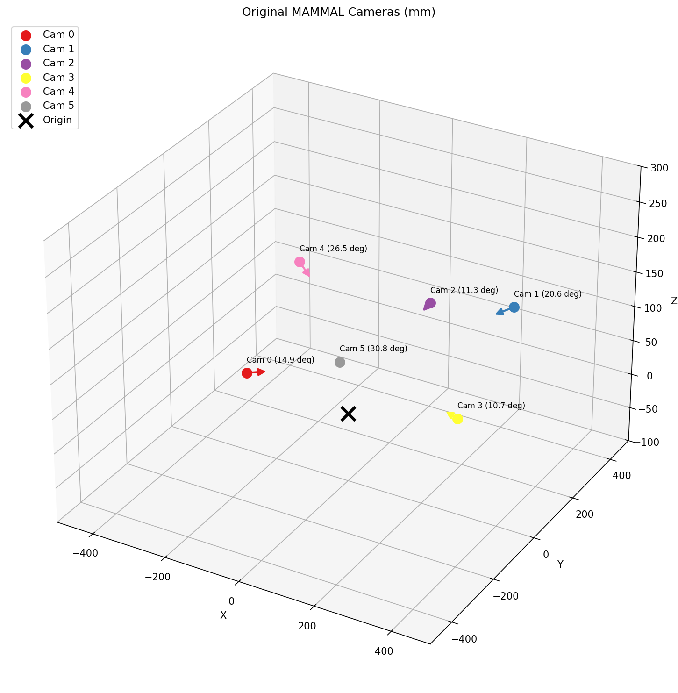
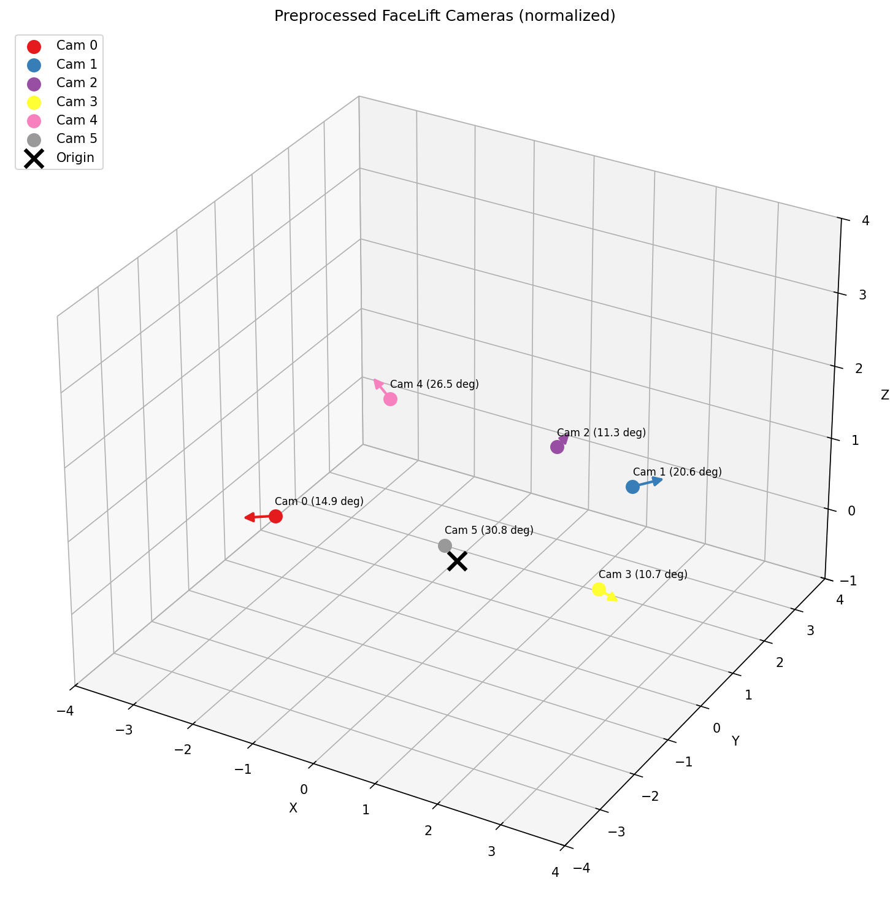
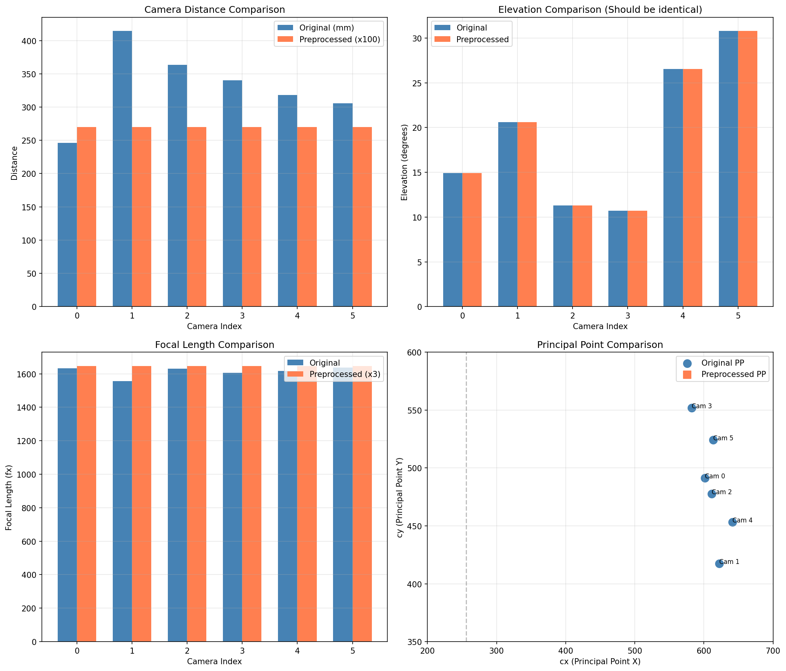

Camera Transformation Report
Generated: 2026-01-21 18:34:00
Purpose: Compare original MAMMAL cameras with preprocessed FaceLift cameras
Summary
0.008148
Scale Factor (dist: 331.4mm to 2.700)
549.0
Target Focal Length (fx = fy)
256.0
Target Principal Point (cx = cy)
1. Camera Position Comparison
| Camera |
Original Distance (mm) |
Preprocessed Distance |
Original Elevation |
Preprocessed Elevation |
Azimuth |
| Camera 0 |
246.06 |
2.700 |
14.9 deg |
14.9 deg |
-147.0 deg |
| Camera 1 |
414.45 |
2.700 |
20.6 deg |
20.6 deg |
34.0 deg |
| Camera 2 |
363.66 |
2.700 |
11.3 deg |
11.3 deg |
86.1 deg |
| Camera 3 |
340.02 |
2.700 |
10.7 deg |
10.7 deg |
-11.3 deg |
| Camera 4 |
318.30 |
2.700 |
26.5 deg |
26.5 deg |
144.0 deg |
| Camera 5 |
305.71 |
2.700 |
30.8 deg |
30.8 deg |
-64.1 deg |
2. Intrinsics Comparison
| Camera |
Original fx |
Preprocessed fx |
Original cx |
Preprocessed cx |
Original cy |
Preprocessed cy |
| Camera 0 |
1632.3 |
549.0 |
601.3 |
256.0 |
491.2 |
256.0 |
| Camera 1 |
1556.8 |
549.0 |
622.0 |
256.0 |
417.5 |
256.0 |
| Camera 2 |
1630.3 |
549.0 |
611.4 |
256.0 |
477.6 |
256.0 |
| Camera 3 |
1606.2 |
549.0 |
582.6 |
256.0 |
551.9 |
256.0 |
| Camera 4 |
1618.3 |
549.0 |
641.5 |
256.0 |
453.2 |
256.0 |
| Camera 5 |
1636.9 |
549.0 |
613.3 |
256.0 |
524.3 |
256.0 |
3. 3D Visualization
Original Cameras (mm scale)

Preprocessed Cameras (normalized scale)

4. Comparison Charts

5. W2C Matrix Sample (Camera 0)
Original W2C
[ 0.5769 -0.8167 -0.0139 10.3386]
[ 0.0027 0.0189 -0.9998 66.4148]
[ 0.8168 0.5768 0.0131 236.6992]
[ 0.0000 0.0000 0.0000 1.0000]
Preprocessed W2C
[ 0.5769 -0.8167 -0.0139 0.1134]
[ 0.0027 0.0189 -0.9998 0.7288]
[ 0.8168 0.5768 0.0131 2.5973]
[ 0.0000 0.0000 0.0000 1.0000]
6. Transformation Explanation
What Changes:
- Distance: 331.37mm to 2.700 (scale factor: 0.008148)
- Focal Length: ~1613 to 549 (FOV normalization to 50 deg)
- Principal Point: Variable (~612, ~486) to Fixed (256, 256)
What Stays Same:
- Rotation Matrix (R): Identical - preserves camera orientation
- Elevation Angles: Identical - preserves view angles
- Azimuth Angles: Identical - preserves camera layout
- Relative Camera Positions: Preserved (only scaled)
7. Why This Transformation?
FaceLift/GS-LRM was pretrained on Objaverse data with specific camera parameters:
- Object distance approx 2.7 units
- FOV approx 50 deg (fx = 549 for 512px image)
- Principal point at image center (256, 256)
Matching these parameters allows the pretrained model to work optimally with mouse data.
Generated by visualize_camera_transformation.py | Mouse FaceLift Project